Chapter 1 · Part 1 — Before Lunch
Jack and Annie were walking home from the grocery store. Jack’s pack was heavy. It held a big jar of peanut butter and a loaf of bread.
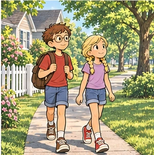
“Are you going to have a peanut butter and jelly sandwich?” said Annie. “Or a peanut butter and honey sandwich?”
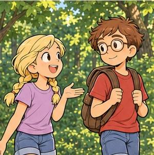
Jack started to answer, but stopped.
“Oh, man,” he whispered.
“What is it?” said Annie.
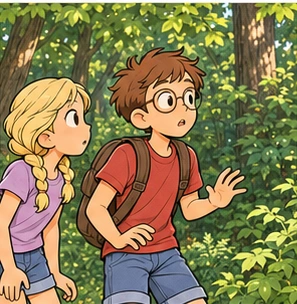
“Look at that!” said Jack.
He pointed to the edge of the Frog Creek woods. In the shadows stood a small, delicate animal. It looked like a tiny deer.
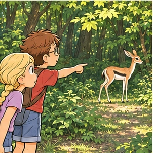
“It’s a sign,” whispered Annie. “Remember when we saw the rabbit? He was a sign of the Wild West.”
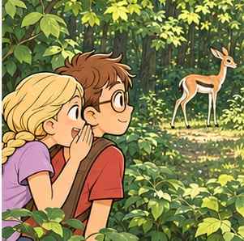
The deerlike creature leaped into the woods.
Jack and Annie didn’t stop to think. They followed as fast as they could. Jack’s heavy pack thumped against his back as he ran.
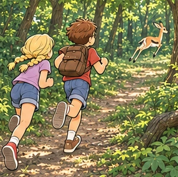
Finally, they stopped and looked around.
“Where did she go?” he said.
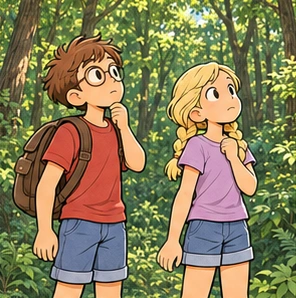
“I don’t see her,” said Annie.
“Oh, wow,” said Annie. She pointed up.
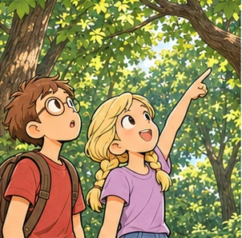
There was the magic tree house. It was shining in the noon sun, at the top of the tallest tree in the woods. Its rope ladder swayed in the shadows below.
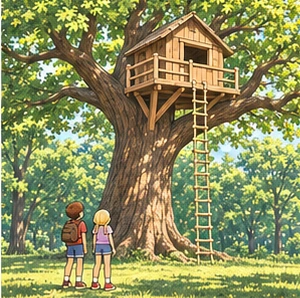
“Where’s Morgan?” said Annie.
Morgan le Fay wasn’t waving at them from the window. She wasn’t even at the window.
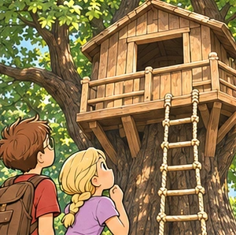
“I don’t know. Let’s go up,” said Jack.
They climbed the ladder and went into the tree house.
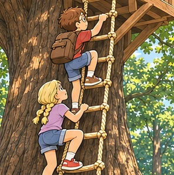
Sunlight streamed through the window. It lit a stack of books and two scrolls in the corner. The ancient scrolls held the answers to riddles Jack and Annie had solved earlier.
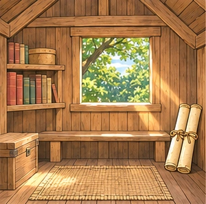
Jack took off his heavy pack.
“Did Morgan leave us a third riddle?” said Annie.
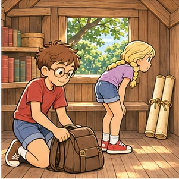
“Looking for someone?” said a soft voice.
Jack and Annie whirled around.
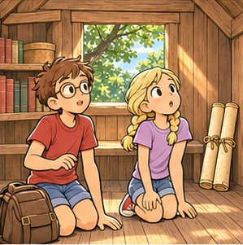
“Morgan!” said Annie.
Morgan le Fay had appeared out of nowhere. She looked ancient and lovely in the bright light.
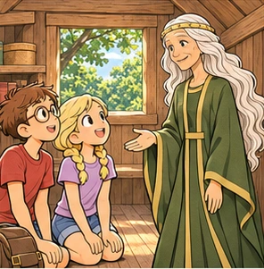
“Do you still want to become Master Librarians?” she asked Jack and Annie. “So you can help me in my work?”
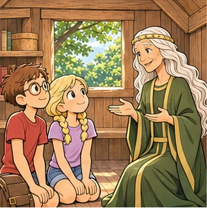
“Yes!” they said together.
“Wonderful,” Morgan said. Then she reached into her robe and pulled out a scroll.
“You’ve solved two riddles so far,” she said. “Here is your third.” She handed the scroll to Annie. “And for your research—”
She pulled a book out from her robe and handed it to Jack. The book’s cover said THE PLAINS OF AFRICA.
“Africa?” said Jack. “Oh, man, I’ve always wanted to go there.”
He opened the book. He and Annie stared at a picture.
It showed hordes of zebras, tall giraffes, big animals with horns, and tiny, deerlike creatures.
“Hey, that’s the animal that led us here!” said Annie.
“A Thomson’s gazelle, I believe,” Morgan said.
“Where are the lions?” said Jack.
“You’ll find out,” said Morgan.
“Um … maybe we need to plan this trip,” said Jack.
Morgan smiled. “No. Go ahead. Make your wish now.”
Annie pointed at the picture. “I wish we could go there,” she said.
“Be careful,” said Morgan. “Just keep an eye out.”
“For what?” said Jack.
“The lions, of course,” she said.
“Wait!” said Jack.
Too late.
The wind had started to blow.
The tree house had started to spin.
Jack squeezed his eyes shut.
The tree house spun faster and faster.
Then everything was still.
Absolutely still.